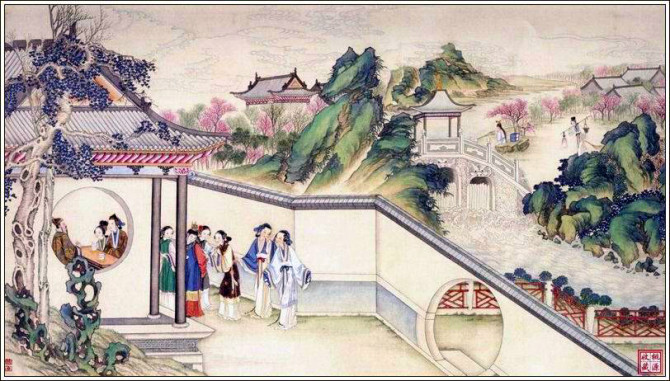
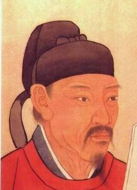

2020年第四届“华夏文化，有冀可寻”河北地域特色文化线上展览|名人文化篇（一）
河北，因位于黄河以北而得名。是中华民族的发祥地之一，省级以上文物保护单位达930处，居全国第一位。河北地处华北平原，东临渤海、内环京津，西为太行山，北为燕山。地处中原地区，文化博大精深，自古有“燕赵多有慷慨悲歌之士”之称，是英雄辈出的地方。
2020年一场突如其来的疫情席卷了神州大地，无数医护战士不畏生死，勇战疫情，多为歌颂。今天在河北名人文化里，咱们首先来了解一下那些河北医学史的“大明星”。
医学名人
这里从战国时期就因神医扁鹊成为中华医学的圣地，神医扁鹊被誉为中国古代五大医学家之首，著有《扁鹊内经》和《扁鹊外经》。司马迁曾在《史记》之中评价扁鹊是古代医学的开山鼻祖，“望闻问切诊疾患，救死扶伤治疑难，开刀妙用麻沸散，百姓皆称医中仙。”便是他的写照。而金元四大家之首的刘完素、近代中西医结合的先驱张锡纯，更让这里的医药文脉强劲悠长。一代代的沧海医匠为华夏注入了更强劲的动力，而他们也在华夏医学史乃至华夏史上熠熠生辉。
1.扁鹊(公元前407—前310年）姬姓，秦氏，名越人， 战国时期河北著名医家扁鹊，可以说是祖国医学史上最具代表性的创新医家。
扁鹊的诊疗技术：扁鹊在诊视疾病中，已经应用了中医全面的诊断技术，即后来中医总结的四诊法：望诊、闻诊、问诊和切诊，当时扁鹊称它们为望色、听声、写影和切脉。他精于望色，通过望色判断病证及其病程演变和预后。扁鹊精于内、外、妇、儿、五官等科，应用砭刺、针灸、按摩、汤液、热熨等法治疗疾病，被尊为医祖。
扁鹊的切脉诊断法也很突出，具有较高水平。《史记》称赞扁鹊是最早应用脉诊于临床的医生。先秦时期，中医的脉诊是三部九候诊法，即在诊病时，须按切全身包括头颈部、上肢、下肢及躯体的脉。扁鹊是我国历史上最早应用脉诊来判断疾病的医生，并且提出了相应的脉诊理论。
2.刘完素（约1110～1200年）金代著名医学家，今河北河间人。 金元时期河北医家的理论创新更是将祖国医学的发展推上了一个高峰。刘完素 ：刘完素主要以《黄帝内经》为学术基础，他精研医理，把《内经》中的关于火热病致病原因的内容选摘出来，加以阐释，这就是著名的《病机十九条》。他还提出了“六气皆从火化”的观点，认为“风、寒、暑、湿、燥、火”六气都可以化生火热病邪，治病，尤其是治疗热性病的时候必须先明此理，才能处方用药。他所创方剂凉隔散、防风通圣散、天水散、双解散等，都是效验颇佳的著名方剂，至今仍被广泛应用着。对于《内经》中的“五运六气”，他也有着精辟的研究和独到的见解，并十分善于运用五运六气的方法来看病。他认为没有一成不变的气运，也就没有一成不变的疾病，因此，医生在处方用药的时候必须灵活机变，具体分析。刘完素在治疗热性病方面的完整理论和对“五运六气”的独到见解，对后世中医学的发展有着深刻影响，甚至对于温病学派的形成也有着至关重要的铺垫作用。
3.张元素 易水学派创始人张元素对前人有关脏腑辨证理论进行研究整理，使之成为包括生理、病理、证候、演变预后和治疗五个方面的系统完善的理论体系。在遣药制方上，张氏运用《内经》关于药物的理论，结合临床，阐述了脏腑规律，并发明了药物归经和引经报使的理论；司古方之法而化裁新方，拟订了五行生克制方大法。张氏这些遣药制方理论，对临床遣药组方有一定的指导意义。
学术创新：刘完素和张元素对祖国医学的贡献不仅在于其自身的学术成就，更为重要的是他们的医学思想及创新精神开启了祖国医学理论创新研究之门。他们之后，创新人才层出不断，形成了金元时期著名的四大医学流派。
十九世纪晚期开始，中西汇通思想开始逐步发展起来。河北医家张锡纯在其“吾人生古人之后，贵发古人所未发，不可以古人之才智囿我，实贵以古人之才智启我，然后医学有进步也”思想影响下，提出了“衷中参西”的汇通观，迈出了在临床中实践中西医结合的第一步，开创了中西医药物结合应用的先河。
4.张锡纯——医学泰斗
小组总结：河北历代医家在继承前人经验的基础上，不断地大胆进行融合、创新，从而促进祖国医学不断地向前发展。河北医家尽管各有专长，而又互相渗透、互相影响，不断向前发展，表现了医学家实事求是，追求真理，并不囿于一己之见的认真态度。他们的这种精神，可以说正是河北文化的一种特色，值得我们更好地继承和发扬。
文学名人
1.苦吟诗人--贾岛
贾岛（又称贾长江），字阆仙，自号碣石山人，唐朝河北道幽州范阳县（今河北省涿州）人，唐代诗人，人称“诗奴”，与孟郊共称“郊寒岛瘦”。
A.刻苦写诗
贾岛写诗，以刻苦为主。他在《送无可上人》诗“独行潭底影，数息树边身”句下就自注：“二句三年得，一吟双泪流。知音如不赏，归卧故山秋。”“二句三年得”自然是夸张说法，但他吟诗常常煞费苦心却真有其事。也正是由于他的刻苦努力，才得以弥补其天分之不足，使他终于在众星璀璨的唐代诗坛赢得一席之地，并且留下许多佳作。
B. 郊寒岛瘦
“郊寒岛瘦”一词是苏东坡所提，说的是孟浩然和贾岛二人。他二人的诗作中所体现出来的都是狭隘的格局，穷愁的情绪和苦吟的精神。因为孟郊与贾岛平时做诗，总爱搜肠刮肚苦思冥想地遣词造句，加之以上所提及的诸方面客观因素的影响，所以诗作中具有“寒瘦窘迫”的风格也是自然的事情，他们都堪称中国诗史中的“苦吟诗人”。所不同的是，在当时孟郊乃“五古”大家，而贾岛为“五律”的领袖。
C. 创作态度
贾岛的苦吟，实际上是在炼意、炼句、炼字等方面都用了一番苦工夫。而这些又都是与作品的思想内容和时代性分不开的。首先我们看到贾岛非常用力于炼意，因而他的作品具有引人入胜的意境。如果写一首诗而意境不佳，味同嚼蜡，叫人读了兴趣索然，那就不如无诗。有了好的意境，然后还必须保证这种意境能够在字句上充分表达出来。
欣赏经典作品
《剑客》
十年磨一剑， 霜刃未曾试。
今日把示君， 谁有不平事？
评价：贾岛的每句诗和每个字都经过反复的锤炼，用心推敲修改。但是到了他写成之后，却又使读者一点也看不出修改的痕迹，就好像完全出于自然，一气呵成的样子。由此可见，所谓苦吟只能是从作者用功的方面说的，至于从读者欣赏的方面说，却不应该看出作者的苦来。
2.享誉诗坛的保定诗人--石英杰
石英杰，男，1969 年出生于河北易县，现任河北省青年诗人学会副会长，保定市作协副主席，保定市青年诗人学会会长，保定学院中文系客座教授。 2010 年前后，和保定部分诗人倡议并组织了“新保定诗群”。“燕赵七子”之一。曾出版诗集《春天深处的红颜》《光斑》《在河以北：燕赵七子诗选》（与人合集）《易水辞》等，多次获奖并入选年度诗歌选本。
A、敏感的内心世界
身为记者的石英杰许是出于职业的敏感性，始终用他睿智的头脑、敏锐的目光，犀利的笔锋，细心的观察着周围的世界，以诗歌的形式抒发自己内心最真实的情感以及对世间万象的解读，将其归纳、整理最终演变为分行的文字展现在广大读者的面前。
B、对事物的悟性
诗人石英杰觉得在诗歌写作中，悟性是穿透事物表象的尖锐度。如何让悟性更加敏感和尖锐呢？他的体会就是要不断拓展生活的广度，不断挖掘心灵的深度，不断提升思想的高度。15年的新闻采访工作，让他有幸见证和经历了普通工作者无法得到的丰富，黑的白的丑的美的善的恶的真的假的。
C、诗歌欣赏
烟囱
原谅我表面安静，内心却明火执仗
我握有薪炭，深藏手段
我不怕伤人一千自损八百
可我思忖再三
咕嘟咕嘟，吐完黑烟和毒气
还是止住牢骚，熄灭狂飙
劝余烬一点一点暗下去
3.红楼梦的缔造者--曹雪芹
曹雪芹，名沾，字梦阮，号雪芹，又号芹溪、芹圃，河北丰润，生于南京，江宁织造曹寅之孙。早年在南京江宁织造府过着富足纨绔的生活。雍正六年，曹家因亏空获罪被抄家，随家人迁回北京，靠卖字画和朋友救济为生。曹雪芹素性放达，爱好广泛，以坚韧不拔的毅力，创作出极具思想性、艺术性的伟大作品——《红楼梦》。乾隆二十八年去世。
A、文学特点
“生于繁华，终于沦落”。曹雪芹的家世从鲜花着锦之盛，一下子落入凋零衰败之境，使他深切地体验着人生悲哀和世道的无情，也摆脱了原属阶级的庸俗和褊狭，看到了封建贵族家庭不可挽回的颓败之势，同时也带来了幻灭感伤的情绪。他的悲剧体验，他的诗化情感，他的探索精神，他的创新意识，全部熔铸到《红楼梦》里。
热爱生活又有梦幻之感，入世又出世，这是曹雪芹在探索人生方面的矛盾。曹雪芹并不是厌世主义者，他并不真正认为人间万事皆空，也并未真正勘破红尘，真要劝人从所谓的尘梦中醒来，否则，他就不会那样痛苦地为尘世之悲洒辛酸之泪，就不会在感情上那样执著于现实的人生。他正是以一种深挚的感情，以自己亲身的体验，写出入世的耽溺和出世的向往，写出了耽溺痛苦的人生真相和希求解脱的共同向往，写出了矛盾的感情世界和真实的人生体验。
B. 红楼梦的文学地位
《红楼梦》（又名《石头记》《金玉缘》），中国古典四大名著之首，清代作家曹雪芹创作的章回体长篇小说，它也是一部具有世界影响力的人情小说作品，举世公认的中国古典小说巅峰之作，中国封建社会的百科全书，传统文化的集大成者。
C、红楼梦的创作
作者本人曹雪芹就在《红楼梦》的开篇中写道“满纸荒唐言，一把辛酸泪。都云作者痴，谁解其中味？”这“一把辛酸泪”就把曹雪芹在写作过程中受到的磨难表现得淋漓尽致。即使是初次品读《红楼梦》，并没有了解过曹雪芹的人，也不难看出这部书是经过数十次，甚至上百次删改才成形的。

片段欣赏
黛玉葬花——《第二十三回 西厢记妙词通戏语
牡丹亭艳曲警芳心》 节选：
回来只见地下还有许多，宝玉正踟蹰间，只听背后有人说道：“你在这里作什么？”宝玉一回头， 却是林黛玉来了，肩上担着花锄，锄上挂着花囊，手内拿着花帚．宝玉笑道：“好，好，来把这个花扫起来，撂在那水里．我才撂了好些在那里呢。”林黛玉道：“撂在水里不好．你看这里的水干净，只一流出去，有人家的地方脏的臭的混倒，仍旧把花遭塌了。那畸角上我有一个花冢，如今把他扫了，装在这绢袋里，拿土埋上，日久不过随土化了，岂不干净。”
《红楼梦》中没有一句废话，有时，一个字、一个词都让人浮想联翩。事实上，也确实这样。如果没有曹雪芹呕心沥血的创作，必定不会有《红楼梦》，也不会有那一个个生动形象的人物，更不会有贾府，不会有美丽的大观园。
4. 天才少女--张爱玲
张爱玲（1920年9月30日-1995年9月），原名张煐，笔名梁京，出生于上海，祖籍河北丰润，中国现代女作家。其主要成就在于文学创作，主要代表作有《沉香屑·第一炉香》《沉香屑·第二炉香》《茉莉香片》《倾城之恋》《红玫瑰与白玫瑰》等。1995年9月，张爱玲在美国洛杉矶去世。
A、创作成就（小说）
张爱玲的小说，与丁玲、冰心等女性作家的作品相比，具有更为鲜明的女性主义特征。20世纪40年代的张爱玲远离抗日救国的主流话语，把眼光投向了“婚姻、爱情、家庭、女人的挫折、女人的处境——一个充满女性气息的世界”。其小说集《传奇》刻画了一大群真实地生存于男权文化之下的女性群像。在中国现代女性作家中，没有一个人像张爱玲一样，从女性本体出发，怀着对经济和精神上缺乏独立自主女性的深切同情和关注，孜孜于女性悲惨命运的写作，通过对一系列女性殊途同归的可悲命运的描写，既揭示了男权社会制度、传统文化及习俗对女性的摧残，更将笔触深入到女性精神世界，从女人原罪意识出发，对女性自身的人格弱点进行了思索与批判，开启女性批判立场。
B、创作成就（散文）
张爱玲的散文成就也很突出。在张爱玲的散文里，她成功地将感性与理性，具体的当下的人生体验与深刻的哲理思考融于一体。一方面，她的散文讲究世俗情趣，实实在在而又心怀憧憬地透视现实人生，谈自己的经历，所见所闻，如童年生活、都市生活、男女饮食、生活起居等等，但张爱玲并不过多地迷醉在生活的浅表层面，而是对生活做更深一层的挖掘，对上述的生活现象、文化现象进行细致的感悟、思考，进而阐释自己对人生的深刻见解，从而使她的散文在情趣之中又带上了理性思辨色彩。
C、作品的特点表现
1、张爱玲的作品喜欢倒叙的手法,以讲故事的口吻来架构整篇文章。 小说《茉莉香片》的开头简单但是大气自然,这样如话家常般简单亲切周到的句子,自然的把读者带入到一种安静的由她的文字营造的环境氛围中,从而跟着她的讲述欢喜悲愁。
2、文章结尾留白,不把男女主人公或事情的发展尘埃落定的说破,给人自由的揣摩和猜测 长篇小说《十八春》中,世钧与慕瑾见面后谈起曼桢的生活,最后写道“他(世钧)心里想着,应当怎样去促成他们的事情。
3、张爱玲文章中喜欢使用“节略法”和电影手法,来体现变幻与无情。请欣赏：
他的笑声像一串鞭炮上面炸的稀碎的小红布条子，跳在空中蹦回到他脸上，抽打他的面颊。
她的声音灰暗而轻飘，像断断续续的尘灰吊子。
堂屋里本就肃静无声，现在这肃静却是沙沙有声，直据进耳朵里去，像电影配音机器损坏后的锈轧。可是一方面继续在学校里住读，常常要走过那座音乐馆，许多小房间，许多人在里面叮叮咚咚弹琴，纷纷的琴字有摇落、寥落的感觉，仿佛是黎明，下着雨，天永远亮不起来了，空空的雨点打在洋铁棚上，空得人心里难受。弹琴的偶尔踩动下面的踏板，琴字连在一起和成一片，也不过是大风把雨吹成了烟，风过处，又是滴滴嗒嗒稀稀朗朗的了。
5. 纪昀（1724年8月3日 -1805年3月14日），字晓岚，别字春帆，号石云，道号观弈道人、孤石老人，清朝直隶献县（今河北省献县）人，政治家、文学家。
（电视剧图片）你初识他可能是因为《铁齿铜牙纪晓岚》这部戏 ，在剧中他十分受乾隆皇帝的喜爱。身为大学士的纪晓岚刚真守正、秉公执法的无私品性，又贪图逢迎，特别欣赏户部尚书和珅，摇尾乞怜、惟命是从的献媚之术。但，这不是全部的他。
主要成就：编撰多部典籍为中华文化史做出杰出贡献
文学上：纪昀的仕宦生涯和学术活动展开在十八世纪中后期，正是中国思想文化史上一个重要的枢纽时期。纪昀一直是官方学术工作的领导人，凡有编辑之役、修书之事，他必在其间。他一生中领导和参与多部重要典籍编修。因此，纪昀是中国文化史上有重大贡献的学者。 [4] 一生悉付《四库全书》，其所著《阅微草堂笔记》和《纪文达公遗集》也流传下来。
政治上：上奏赈灾灾民
在政治上，纪昀关注民间疾苦。乾隆五十七年（1792年）夏，北京附近遭受水灾，饥民拥入京师就食，纪昀急忙向皇帝上疏陈情，奏请截留南漕官粮万石，到灾区设粥放赈，京师饥民不驱自退，社会秩序安定下来。虽然其主观上是为了维护朝廷统治，但在客观上帮助灾民度过了饥荒，不能不说是一宗善政。
维护妇女权益
在政治上，纪昀提倡“酌乎事势”，因势利导，在理论上批判宋儒之苛察。纪昀对道学家的迂腐和虚伪十分痛恨，其冷嘲热讽，措词也相当尖刻。在《阅微草堂笔记》的一则故事中，就烈女范畴问题向程朱理学展开了一场挑战。有司规定，妇女守节被杀的是烈女，官方予以表彰，而对“捆绑受侮辱而不屈被杀”的人，不以烈女看之，例不表彰。纪昀不这样认为，认为这纯属于道学家不情的理论，他公然郑重上表称：“捍刀捐弃生命，其志向与节操没有区别，像忠臣烈士，发誓不从贼，虽然捆绑迫使其跪拜，又怎能说他屈膝予贼有悖朝廷呢？”经他慷慨陈词，皇帝下令有关部门，大致甄别，予以表彰。
书法 清初书法，由于康熙、乾隆等人的倡导赵孟頫、董其昌书法，当代大部分书法家也是受这氛围所影响，纪昀也跟随着当代的潮流，也在当代占有一席之地，其书法书写 流利，有着圆融的特点，有着雍容华贵气质，书法大小相兼，收放结合，疏密得体，苍劲多姿，可以说是实用性和艺术性的结合。纪昀在文化上，很重视文学作品的艺术效果，风格主张质朴简淡，自然妙远，内容上主张不夹杂私怨，不乖于风教。除开其阶级局限外，其在文风、文德上的主张，仍不失其借鉴价值。
6. 贞观中直谏者——魏征

魏徵（现作“魏征”，580年-643年2月11日），字玄成，隋唐政治家、思想家、文学家和史学家，祖籍巨鹿郡下曲阳县（现晋州市），因直言进谏，辅佐唐太宗共同创建“贞观之治”的大业，被后人称为“一代名相”。
官至光禄大夫，封郑国公，其言论多见《贞观政要》，其中最著名的是流传下来的谏文表——《谏太宗十思疏》。谥号“文贞”，位列凌烟阁二十四功臣之一
大概他是中国史上，最能杠的找茬王？
唐太宗朝，最有名的大臣是谁？
说是魏征，谅来无人反对。
那么，身为中国史第一谏臣，魏征具体的工作是啥？
《剑桥中国隋唐史》里，就比较直白了：
“魏征很少参与实际的行政和决策工作，他并不是以作为从事实际工作的政治家而成为当时和后世有代表性的人物。
魏征一直以一个不屈不挠的道德家和无所畏惧的谏诤者而著称；中国人确实认为魏征是太宗群臣中最杰出的人物。”
即，太宗朝的群臣里，比起实干家如房玄龄，顾问小舅子如长孙无忌，决策大师如杜如晦，魏征主要负责的是：进谏和反对。
即便他老了，太宗还是要他在朝里镇着，给自己找茬。
不妨说魏征并不是个天才谋划家，更像一个道德劝谏者，一个反对派——有时甚至显得不近人情，相当地杠。
但李世民需要他——不只是因为李世民在意后世形象。
话说古代若求治世，一向是天子与士大夫共治天下，但这玩意没有个实际标准。
黄仁宇先生在《中国大历史》里提过，唐朝时还没有制度上的“互相制衡”（checks and balallces）。在贞观初，没什么可以制衡李世民。李世民自己是知道这道理的：既然大家都希望有个啥，能杠一下天子，好，就自己选个魏征来杠吧。
李世民每天放任魏征这个河北人、建成旧党、道德洁癖，无休止地叨叨自己，就是明明白白告诉天下：自己不念旧恶、任才量使、乐于听谏。甚至魏征逝世后，李世民一旦要表达自己的悔意，也可以去把推倒的碑又立起来。他心里不定多少次念叨“魏征这个杠精”呢；但他也知道，自己乃至大唐，终究是需要有魏征这么个人的。我们现在说贞观朝多好，说划分十道、亲选刺史、修订法典、改革府兵，这些都太大了。只有“太宗每天允许魏征叨叨自己”，鲜明而实在，告诉我们：太宗是个知错能改的脾气，拥有千古无二的开明，这就足以让我们相信，李世民很好。
• 7. 高适（约704年-约765年），字达夫、仲武，唐朝渤海郡（今河北景县）人，后迁居宋州宋城（今河南商丘睢阳），唐代著名的边塞诗人，世称高常侍，与岑参并称“高岑”，与岑参、王昌龄、王之涣合称“边塞四诗人”。有《高常侍集》等传世。开封禹王台五贤祠即专为高适、李白、杜甫、何景明、李梦阳而立。
• 曾任刑部侍郎、散骑常侍、渤海县候，其诗笔力雄健，气势奔放，洋溢着盛唐时期所特有的奋发进取、蓬勃向上的时代精神。
• 边塞诗 书画家王靖先生作品高适诗 成就最高。代表作如《燕歌行》《蓟门行五首》《塞上》《塞下曲》《蓟中作》《九曲词三首》等，歌颂了战士奋勇报国、建功立业的豪情，也写出了他们从军生活的艰苦及向往和平的美好愿望，并揭露了边将的骄奢淫逸、不恤士卒和朝廷的赏罚不明、安边无策,流露出忧国爱民之情。高适有些赞美不义战争、歧视少数民族的作品，如《李云南征蛮诗》等,是这类诗歌的糟粕。
• 反映民生疾苦的诗 这些诗比较深刻地揭露了统治者与广大人民之间的矛盾，如《自淇涉黄河途中作十三首》之九、《东平路中遇大水》等，真实地描写了广大农民遭受赋税、徭役和自然灾害的重压,对他们的困苦境遇表示同情,他还写过一些赞美“良吏”的诗，从“仁政”思想出发，提倡轻徭薄赋，在当时也有一定的进步作用。
• 讽时伤乱诗 大抵指斥弊政，对统治者的骄奢淫逸有所批判，如《古歌行》《行路难二首》等。还有一些诗作于安史乱后，对政局流露出忧虑和愤慨，如《酬裴员外以诗代书》《登百丈峰二首》等。
• 咏怀诗 数量最多，思想内容比较复杂。像《别韦参军》《淇上酬薛三据兼寄郭少府微》《效古赠崔二》《封丘作》等，抒写了怀才不遇、壮志难酬的忧愤，对现实有所不满。
• （选自思想道德良好组、沧海英才 卓尔不群）
科技名人
1.构建科学殿堂的艺术巨匠 杨向中
杨向中（1959年7月~2009年2月5日），河北魏县人，美国康州大学教授，再生生物学研究中心主任，全球克隆技术必居前三，世界克隆牛之父，致力于祖国生物克隆技术发展，01年被时任国务院温副总理“无限时接见”，美国“中国桥”留学基金总裁及创始人。2009年2月5日在美国波士顿逝世。
主要事迹
大家对克隆羊多莉熟知，却很少有人知道克隆小牛艾米。
人类早就已有克隆的梦想。从1905年起，就有人在作这方面的研究；1997年2月，英国人用母羊乳腺细胞克隆出绵羊多莉，使克隆技术成为全球的热门话题；接着，日本和新西兰科学家分别用卵巢和输卵管细胞克隆成功，给世界范围内克隆技术的研究领域又添上了几个成功的范例。然而，用与雌性生殖系统无关的细胞进行克隆，始终是世界科学界的一个梦想。
1999年6月10日，梦想成真，世界科学界震动了。这一天，小母牛艾米——世界上首例用非生殖器官的成年细胞克隆的动物诞生了，与克隆绵羊多莉不同，艾米是从一头13岁的母牛的耳朵皮肤细胞中取出脱氧核糖核酸（DNA）克隆而成的。这一重大前沿技术的突破是由美国康州大学转基因动物实验室的15位科学家完成的，领导该项研究的是美国康州大学动物生物技术研究中心顾问、动物生物技术部主任、美籍华人科学家杨向中教授。
社会活动
杨向中是一位敬业的科学家，也是一名活跃的社会活动家。早在1988年，杨向中和几位同学倡议组织了志在推动中美农业科技交流的“旅美农学会”，出任首届主席和理事长。1992年，“中国—康奈尔科研基金项目”成立，这就是今天在海外学者中颇负盛名的“中国桥基金会”的前身，作为总裁的杨向中已先后为基金会筹集了200万美元，基金会接待过200多个国内来的访问团，资助了200多位学者、学生赴美深造或回国讲学，并且多次率团回国考察。杨向中担任着旅美专家教授联合会主席、中国国务院杨陵高新技术示范区顾问、中国农业科技顾问等职务。
研究精神
生命不息研究不止 杨向中患癌症的时间长达10年，因为手术，他半边脸的肌肉组织都已切除。虽然癌细胞不断在侵蚀着他的肌体，但他一刻也没有停止对克隆技术的研究与探索。2006年，杨向中和他的研究团队首次证明“分化细胞可用于动物克隆，其效率可以优于成体干细胞”的成果再次引起轰动，该研究解答了克隆效率低下这一困扰科学家们长达10年的世界性难题。
科学家
郭守敬
郭守敬（1231年－1316年），字若思。邢州邢台县（今河北省邢台市）人。元朝著名的天文学家、数学家、水利工程专家[1] 。早年师从刘秉忠、张文谦，官至太史令、昭文馆大学士、知太史院事，世称“郭太史”。元仁宗延祐三年（1316年），郭守敬逝世，享年八十六岁。著有《推步》、《立成》等十四种天文历法著作。
郭守敬集天文、历法、水利和数学才华于一身。
历法方面他自至元十三年（1276年）起，奉命修订新历法，历时四年，制订出了通行三百六十多年的《授时历》，成为当时世界上最先进的一种历法。为修订历法，郭守敬还改制、发明了简仪、高表等十二种新仪器。
水利方面，至元元年（1264年），郭守敬奉命修浚西夏境内的古渠，更立闸堰，使当地农田得到灌溉。至元二十八年（1291年），郭守敬任都水监，负责修治元大都至通州的运河，耗时一年，完成了全部工程，定名通惠河，发展了南北交通和漕运事业。
天文方面，1970年，国际天文学会以郭守敬的名字为月球上的一座环形山命名为“郭守敬环形山”。 1977年3月，国际小行星中心将小行星2012命名为“郭守敬小行星” 。中科院国家天文台也将国家重大科技基础设施LAMOST望远镜命名为“郭守敬天文望远镜”。
数学方面：废除上元积年，改用至元十八年（1281年）天正冬至为其主要起算点。《授时历》采用的弧矢割圆术，将各种球面上的弧段投射到某个平面上，利用传统的勾股公式，求解这些投影线段之间的关系。
2.尹赞勋
尹赞勋（1902.2.23-1984.1.27），出生于河北平乡。地质学家、古生物学家。
生平经历：
1919年尹赞勋考入北京大学，1923年留学法国，在里昂大学地质系学习八年，获理学博士学位。
1931年回国后，任中法大学和北京大学讲师，后担任中央地质调查所副所长、代所长。
1942年任前经济部地质调查所副所长、代所长。
1951年加入九三学社。
1955年当选为中国科学院院士。
1979年1月，时年77岁的尹赞勋加入中国共产党。
1984年1月27日，尹赞勋病逝。
尹赞勋的研究领域涉及区域地质、大地构造、岩石矿产、地层、火山、第四纪、岩溶洞穴、古生物以及科学史等许多方面，他在早期曾引进了古地质研究方法，晚年又探索在天文、地质和生命科学的结合部位论证古生物钟的可靠性，尤其是适时评介板块构造学说。
小组总结：考入北京大学这座巍峨的学术殿堂，可见尹赞勋对学术方面投入了大量精力，不仅如此尹赞勋还是一位热心地质教育、重视人才培养的教育家，是一名出色的科普作家。他是一位心胸开阔、乐于助人的科学作者。他为人代写序言并为年轻人发表文章奔走力争，甘为人做嫁衣；在与人合作时注重发挥合作者的特长协调工作；他做了大量的区域地区资料的整理，为他人铺路；他注重对人才的发现和培养。他发表了上百种堪称精品的著作，是一个辛勤而又多产的科学家。
3.祖冲之（429年—500年），字文远，出生于建康（今南京），祖籍范阳郡遒县（今河北涞水县），中国南北朝时期杰出的数学家、天文学家。祖冲之一生钻研自然科学，其主要贡献在数学、天文历法和机械制造三方面。他在刘徽开创的探索圆周率的精确方法的基础上，首次将“圆周率”精算到小数第七位，即在3.1415926和3.1415927之间，他提出的“祖率”对数学的研究有重大贡献。直到16世纪，阿拉伯数学家阿尔·卡西才打破了这一纪录。
除了对圆周率精益求精，祖冲之设计制造过水碓磨、铜制机件传动的指南车、千里船、定时器等。在中国古代指南车的名称由来已久，但其机制构造则未见流传。三国时代的马钧曾造指南车，至晋再次亡失。东晋末年刘裕攻长安，得后秦统治者许多器物，其中也有指南车，但“机数不精，虽曰指南，多不审正，回曲步骤，犹须人功正之”。南朝宋昇明年间(477-479年)萧道成辅政，“使冲之追修古法。冲之改造铜机，圆转不穷而司方如一，马钧以来未有也。”祖冲之所制指南车的内部机件全是铜的，它的构造精巧，运转灵活，无论怎样转弯，木人的手常常指向南方。
祖冲之还设计制造过一种千里船，史载“又造千里船，于新亭江试之，日行百余里”。它可能是利用轮子激水前进的原理造成的，一天能行一百多里。
祖冲之的成就不仅限于自然科学方面，他还精通乐理．对于音律很有研究。祖冲之又著有《易义》《老子义》《庄子义》《释论语》等关于哲学的书籍，都已经失传了。文学作品方面他著有《述异记》，在《太平御览》等书中可以看到这部著作的片断。
祖冲之圆周率算法：在祖冲之那个时代，算盘还未出现，人们普遍使用的计算工具叫算筹，它是 一根根几寸长的方形或扁形的小棍子，有竹、木、铁、玉等各种材料制成。 通过对算筹的不同摆法，来表示各种数目，叫做筹算法。如果计算数字的位数越多，所需要摆放的面积就越大。用算筹来计算不象用笔，笔算可以留在 纸上，而筹算每计算完一次就得重新摆动以进行新的计算；只能用笔记下计算结果，而无法得到较为直观的图形与算式。因此只要一有差错，比如算筹被碰偏了或者计算中出现了错误，就只能从头开始。祖冲之为求得圆周率的精准数值，就需要对九位有效数字的小数进行加、减、乘、除和开方运算等十多个步骤的计算，而每个步骤都要反复进行十几次，开方运算有 50 次，最后计算出的数字达到小数点后十六、七位。因此《南史》一书称赞他：冲之解钟律博塞，当时独绝，莫能对者。
三、茶叶大师
中国茶仙--卢仝
卢仝，号玉川子，济源人，祖籍范阳（今河北涿县），唐代诗人。卢仝一生爱茶成癖。他的一曲《茶歌》，自唐以来，经历宋元明清各代，传唱千年不衰，至今诗家咏到茶时，仍屡屡吟及。
A、茶歌一曲
卢仝《走笔谢孟速议寄新茶》诗中，诗人点视孟凍议白密封并加三道印泥的新茶，在珍惜喜爱之际，自然想到了新茶采摘与焙制的辛苦，得之不易。接着，诗人以神乎其神的笔墨，描写了饮茶的感受。茶对他来说，不只是一种口腹之饮，茶似乎给他创造了一片广阔的精神世界，当他饮到第七碗茶时，只觉得两液生出习习清风，飘飘然，悠悠飞上青天。《茶歌》的问世，对于传播饮茶的好处，使饮茶风气普及到民间，起了推波助澜的作用。
B、卢仝与茶的故事
卢仝一生爱茶成癖，诗风浪漫且奇诡险怪，对茶有着独到的见解。他认为喝茶讲究心性，品茶时若能达到宠辱偕忘，怡然自得，任其天地悠悠不尽，沧桑藐藐无绝，便可成百岁不老之人，至于渔樵于江渚，侣鱼虾而友麋鹿，又何憾焉……他把茶的功效和对茶饮的审美愉悦，在诗中表现得酣畅淋漓。人以诗名，诗又以茶名也。
C、作品欣赏
《七碗茶诗》
一碗喉吻润，
二碗破孤闷。
三碗搜枯肠， 惟有文字五千卷。
四碗发轻汗， 平生不平事，尽向毛孔散。
五碗肌骨清，
六碗通仙灵。
七碗吃不得也， 唯觉两腋习习清风生。
演艺名人
1.邓伦
邓伦，1992年10月21日出生于河北省石家庄市，中国内地影视男演员，毕业于上海戏剧学院表演系。代表作：《因为遇见你》、《香蜜沉沉烬如霜》、《海棠经雨胭脂透》、《一千零一夜》等
等。
邓伦有很多代表作，作为演员，演技能打，在戏之外的部分，就像他自己所说：“我没在演戏时不好好演，也没在戏外继续演”。他说过的话，前后一致，都在那里，他做过的事，桩桩自洽，都有逻辑。邓伦就像一个园丁，春耕夏耘着他的演艺事业，在那些小透明的年代里，他一直默默拍戏，坚持着。出道八年，他已完成20个角色。有的火了，有的至今仍未播出，人们只记得其中几个，而这所有，却已是他演员经历里无可替代的部分。
2.赵丽颖
赵丽颖，1987年10月16日出生于河北省廊坊市，中国内地影视女演员、歌手。
代表作：《花千骨》、《你和我的倾城时光》、《有翡》等。
赵丽颖出生于河北廊坊市的一个普通家庭，祖辈为农民，她亦出身于农村，而农村的生活经历，则磨练出了她坚强的意志，也造就了其坚韧顽强的个性。她是一个对自己有非常清楚的认识的人，不值得他关心的她真的不会放在心上。在众人纷纷跟风黑她，把脏水破给他的时候，她连评论都不关，照样发着正能量的话语，只是头埋得更低去工作，后来凭着“省级旅游大使”的称号狠狠打了那些造谣者的脸。
3.边江
边江，1982年5月24日出生于河北秦皇岛 ，毕业于北京电影学院表演系02级高职配音班，中国内地配音演员、配音导演、演员。
边江是边江工作室的创始人，同时也是国内著名的配音演员、配音导演，参与了动画版《魔道祖师》以及《陈情令》、《三生三世十里桃花》、《老九门》、《何以笙箫默》等多部知名电视剧主角的配音工作，创造了让无数女孩倾羡的男神角色，承包了“配音界半边天”
4.林一
林一，1999年1月11日出生于河北省，成长于辽宁省沈阳市，中国内地影视男演员，就读于北京体育大学国标舞专业。
个人经历：
2015年，签约唐人影视。
2016年，利用暑假的时间到国外接受了专业的舞蹈和表演培训 。
2017年，参加青春校园网络剧《你好，旧时光》选角活动，试镜男主角林杨；同年，作为固定嘉宾参加优酷视频偶像养成类节目《美少年学社》 ；12月，其出演的科幻电影《希望岛》正式开机，从而正式以演员身份进入演艺圈 。
2018年，主演青春爱情剧《致我们暖暖的小时光》 。
2019年11月，凭借电视剧《致我们暖暖的小时光》获得第26届华鼎奖中国百强电视剧满意度调查颁奖盛典中国当代题材电视剧最佳男演员提名。
（选自思想道德良好组）
爱迪生曾经说过：“我崇尚一切德高望重的名人，但我从不败倒在他们的脚下，我渴望用科学来否定他们的谬误。”它们是圣洁的偶像、是人们心中的“圣人”，在了解到医学名人，文学名人，科技名人以及演艺名人的诸多故事后，你对偶像的认知是否有了一些新的变化？今天的名人文化（上）到这里就结束了，欢迎收看下期名人文化（下），带你领略更多的武学名将！